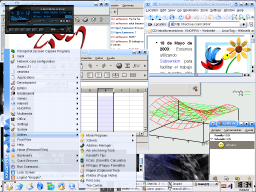

Cualquier persona puede contar con Linux en su computador, o puede llevar linux en un bolsillo, y correrlo en el computador donde esté trabajando, ni siquiera hay necesidad de contar con un disco duro para poder ejecutar el sistema operativo, con aplicaciones gráficas y variedad de software, como por ejemplo herramientas de oficina, aplicaciones científicas e incluso instalaciones en clusters. Lo he probado en distintos PCs de escritorio y portátiles y realmente es espectacular.
La magia la trae los Live-CDs, estos CDs arrancan el sistema operativo sin necesidad de instalarse en el disco duro, detectan componentes del computador como tarjetas de red, inalámbricas, sonido, video, particiones y usan los drivers apropiados para que el computador funcione, requiriendo más memoria RAM que una instalación básica de Linux, pero memoria similar a la que exigen otros sistemas operativos, que además requieren mucho espacio en disco duro y un proceso de instalación con una cantidad de preguntas a las que el usuario responde usualmente siguiente, siguiente, siguiente sin preguntarse si realmente eso es lo que quiere.
El ejemplo más prominente de los LIVE-CD es knoppix. Es un sistema de autodetección de hardware basado en debian GNU/Linux, que además de emplear métodos para cargar en memoria RAM lo necesario para ejecutar el sistema operativo, puede aprovechar espacio libre en disco duro para hacer que su funcionamiento sea más rápido, usa los CDs con un formato de compresión especial para permitirle almacenar muchos programas, y la opción de instalar en el disco duro el Sistema Operativo de forma sencilla y rápida.
En realidad la instalación de Debian GNU/Linux es muy sencilla, lo complejo es la configuración, y de eso se encarga knoppix como se mencionó anteriormente.
Pero ahí no termina la historia, en realidad es una continuación con un gran valor agregado. La persona que inició este proyecto GPL(fuentes abiertas y con libre distribución) es un alemán llamado Klauss Knopper. Varios grupos de personas han visto una gran oportunidad para empaquetar aplicaciones específicas adicionales a los casi 9000 paquetes que ofrece debian oficialmente para once arquitecturas distintas de computador.
Como se mencionó anteriormente knoppix tiene varios descedientes debido a que grupos distintos de personas han notado que hay comunidades o grupos de personas con necesidades afines.
Los primeros beneficiados son los usuarios de educación y dado que el nivel de conocimiento debe diferenciarse, por lo menos entre colegio y universidad, hay dos descendientes enfocados particularmente a apoyar estos dos grupos.
El descendiente es Freeduc, un proyecto francés que lanzó ofset, inicialmente ellos han llevado a cabo y patrocinado varios proyectos, entre los cuáles estaba la clasificación de software para apoyar la educación desde el colegio. Encontraron knoppix y acondicionaron su propio CD
El descendiente es Quantian, organizado por Dirk Eddelbüttel, que incluye entre otros, sistemas gis, sistemas de algebra computarizada y sistemas que facilitan la escritura de documentación orientada a las ciencias.
Este descendiente es morphix, cuya meta principal es adecuar Live-CDs para usos específicos. Tal proyecto es encabezado por Alex de Landgraaf Para citar unos ejemplos, hay cds que empaquetan muchos paquetes específicos para KDE, un cd con recopilación de juegos para linux, otro que recopila ambientes gráficos y livianos y otro que recopila ambientes gráficos pesados en sus últimas versiones.
Otro más, esta vez para hackers y crackers, este descendiente es knoppix-std(Security Tools Distributions), para los paranoicos de la seguridad. Es un buen espacio para aprender a tender trampas, para protegerse y en general para darse cuenta que es más fácil estar expuesto de lo que uno cree.
Es muy sencillo, si usted desea una copia, puede obtenerla vía web(Siga los enlaces de la página del cd que desee), cerca de unos 600 megabytes cada uno, o más, aunque si quiere, puedo quemar un CD para usted, tendría que enviarme un correo para acordar cómo hacerlo, la única cuestión es que vivo en Bogotá y no dispongo de suficiente tiempo como para enviarlo por correo a otro sitio. Recuerde que esto es totalmente LEGAL porque estamos protegidos por la GPL y el deseo de miles de personas que han hecho realidad esta posibilidad con su esfuerzo.
La instalación es tan sencilla como invocar un programa y decidir en qué partición se coloca. Es aún más sencillo si solamente desea a Knoppix o uno de sus descendientes como único sistema operativo.
No olvide enviármelas, si quiere completar algo que sienta incompleto, explicaciones, si tiene dibujos, o lo que considere puede ayudar a enriquecer este documento.
Todos los que han contribuido a la creación, mejoramiento, prueba, distribución de software de calidad como este: gente de BSD, GNU, XFree, Debian, Knoppix y personas que han hecho comentarios y me mostraron sin proponérselo la necesidad de divulgar esto. A los que no nombro, presento mis disculpas. Se que hay miles de personas que han trabajado calladamente y que merecen los agradecimientos. Por lo que han construido y por lo que ayudarán, gracias.
{kind=link}